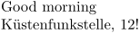

Contents
Summary
The command \define is used to define a new ConTeXt macro.
Settings
| \define[...]\command{...} | |
| [...] | number |
| \command | csname |
| {...} | content |
| Option | Explanation |
|---|---|
| number | number of arguments |
| \command | name of the new macro |
| {...} | definition |
Description
\define
is like
\unexpanded
\def
, while
\defineexpandable
is like
\def
.
The optional bracketed argument denotes the number of parameters you can give to your command. macro contents is the result when the macro gets expanded.
The name of the new command may not include numbers.
Examples
Example 1
-
\define\hello{Good morning} % You may not use numbers % \define[1]\mp3{The ID3 Tag of the MP3 file is: #1} % but this will work: \define[1]\mpThree{The ID3 Tag of the MP3 file is: #1} % You can use non-ASCII characters (including Chinese, Emoji etc.). % but syntax highlighting fails on them \define[1]\KüFst{Küstenfunkstelle, #1!} \hello \KüFst{12}
- 